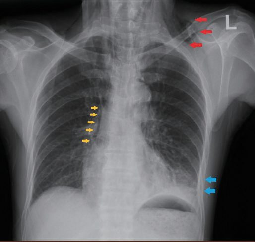
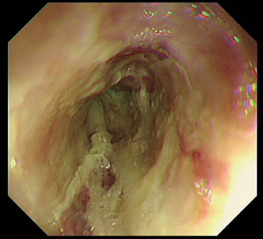
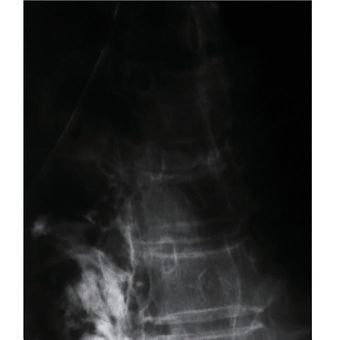
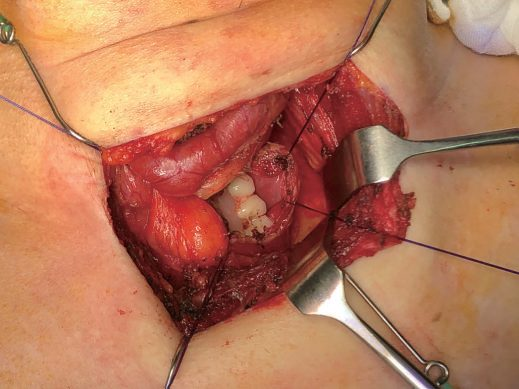
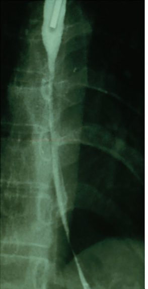

Boerhaave Syndrome / Esophageal Perforation
Summary
- Oesophageal perforation is a potentially lethal condition, primarily because of resulting mediastinal or pleural sepsis, and delayed diagnosis and management markedly increase morbidity and mortality [1].
- Boerhaave's syndrome is spontaneous emetogenic perforation resulting from a sudden rise in oesophageal pressure against a closed glottis during vomiting, classically presenting with the triad of vomiting, chest pain, and subcutaneous emphysema [1].
- It carries the highest mortality of all causes of oesophageal perforation, and early diagnosis and treatment significantly improve survival [2].
There is no NICE guideline on oesophageal perforation. Because the commonest cause is iatrogenic injury during endoscopic dilatation, the relevant UK guidance is the British Society of Gastroenterology national guideline on oesophageal dilatation, which sets out how perforation should be prevented, recognised, and managed, and requires every unit to hold a written protocol naming the surgeon who will manage it [3].
Definition
Boerhaave's syndrome is a spontaneous (non-iatrogenic) perforation of the oesophagus caused by a forceful increase in intraluminal pressure during vomiting against a closed glottis [1][4]. It is one cause among several of oesophageal perforation, which also include iatrogenic instrumentation, foreign body ingestion, caustic injury, and penetrating/blunt trauma [1].
Pathophysiology
- The site of perforation in Boerhaave's syndrome is typically the left lateral wall of the distal oesophagus, 2–4 cm above the gastroesophageal junction (GEJ), reflecting the classic anatomic weak point and left-sided course of the distal oesophagus [1][2].
- Gastric juice and ingested food are forcefully ejected into the left pleural cavity, and a left pleural effusion rapidly accumulates [1].
- Iatrogenic perforation, the most common cause of oesophageal perforation overall (typically from EGD/dilatation procedures), most often occurs in the cervical oesophagus near the cricopharyngeus muscle, itself the narrowest and most vulnerable point of the oesophagus [2].
Cervical versus intrathoracic perforation
Cervical/pharyngeal perforations tend to produce much less systemic sepsis than intrathoracic perforations, because contamination is more contained in the neck, whereas intrathoracic perforation causes mediastinitis and rapid clinical deterioration [1]. This distinction drives management: the cervical group are candidates for conservative treatment, the intrathoracic group usually are not [1].
Clinical features
- The classic triad of Boerhaave's syndrome is vomiting, chest pain, and subcutaneous emphysema [1].
- Severe retching followed by retrosternal chest pain should raise suspicion [4].
- Haematemesis may or may not be present [1].
- Physical examination reveals subcutaneous emphysema of the chest wall, sometimes extending to the neck; Hamman's sign (also referenced as "Hartmann's sign" in the ABSITE Review) is a crunching sound on cardiac auscultation caused by mediastinal (surgical) emphysema [1][2].
- As mediastinitis develops, patients become febrile, tachycardic, and tachypnoeic, with fever, leukocytosis, and progression to sepsis [1][2].
- Differential diagnoses include pneumonia, myocardial ischaemia, and other intra-abdominal perforations when pain is referred to the epigastrium [1].
- Cervical/pharyngeal perforation (e.g., a fishbone lodging at the postcricoid area) typically presents with neck pain, tenderness, and subcutaneous emphysema, without the marked systemic sepsis of intrathoracic perforation [1].
- Generalized abdominal pain, worse with breathing or movement and possibly radiating to the back or shoulder, along with generalized "board-like" peritonism, mild fever, pallor, tachycardia, and often profound autonomic hypotension responding quickly to modest fluid resuscitation, characterizes acute upper GI perforation broadly [4].
Related conditions of forceful vomiting
Forceful vomiting may instead produce a Mallory-Weiss tear at the oesophagogastric junction, mostly immediately below the squamocolumnar junction; patients present with haematemesis, bleeding is rarely severe, diagnosis is readily made at endoscopy, and bleeding can be stopped with adrenaline injection or endoscopic clips that also close the mucosal defect [1]. Intramural oesophageal dissection is separation of the mucosa and/or submucosa from the deeper muscular layers, occurring most commonly in elderly patients on anticoagulants or with coagulation disorders and often precipitated by vomiting; patients present with acute chest discomfort or odynophagia, haematemesis follows if the haematoma ruptures into the lumen, and treatment is conservative with correction of anticoagulation, the haematoma usually resolving in 7–14 days [1].
Etiology
- Iatrogenic perforation from endoscopic procedures (dilatation of strictures or achalasia, EMR/ESD/POEM with inadequate mucosal closure) is the most common overall cause of oesophageal perforation [1][2].
- Boerhaave's syndrome (spontaneous emetogenic perforation) results from a sudden rise in oesophageal pressure against a closed glottis during vomiting, often with a history of alcohol use [1][2].
- Perforation from direct penetrating trauma is rare because the oesophagus is a deep-seated organ, and blunt external trauma rarely causes it [1].
- Other causes include foreign body ingestion (especially sharp objects), corrosive/caustic ingestion causing transmural necrosis, eosinophilic oesophagitis presenting with spontaneous perforation, and perforation through advanced oesophageal cancer (poor prognosis, reflecting underlying advanced disease) [1].
- Additional causes recognized include peptic ulceration, gastric malignancy, and gastric volvulus with ischaemic perforation for upper GI perforation broadly [4].
Foreign bodies
Swallowed foreign bodies impact at the three narrow portions of the oesophagus, the cricopharyngeus/pyriform fossa, the mid-oesophagus where the aorta and left main bronchus cross, and the oesophagogastric junction [1]. It is common in children, and in adults more prevalent among the elderly with swallowing difficulties, those with dementia, unhealthy alcohol use, or mental health disorders; fish, pork and chicken bones are common offenders, and in complete obstruction patients may be unable to swallow even their saliva [1].
Caustic injury
The severity of caustic injury depends on the type, pH, quantity and duration of exposure: a strong acid causes coagulative necrosis with eschar formation that may limit penetration to deeper layers, whereas a strong alkali causes liquefactive necrosis that penetrates deeper and produces a more severe injury [1]. There is no role for gastric lavage or attempts to neutralise the agent; hoarseness is an important sign because it may signify laryngeal injury and impending airway obstruction [1].
Diagnosis
Chest radiograph may show subcutaneous and mediastinal air, pneumothorax, hydropneumothorax, and a widened mediastinum; an erect chest X-ray looking for free gas is the usual first step [1][4]. Free gas is seen on the erect chest radiograph only about 60% of the time, and where it is non-diagnostic a CT scan is often required, needing intravenous contrast and therefore an eGFR above 35 [5].

- A water-soluble (Gastrografin) contrast swallow study is considered the best test to confirm and localize the perforation, though non-ionic/dilute barium is preferred if aspiration risk is a concern; sick patients may not tolerate oral contrast [1][2].
- CT scan (ideally with both intravenous and oral contrast) demonstrates the site and cause of perforation as well as the extent of mediastinitis, effusion, and collections, and is used once the patient is haemodynamically stable enough [1][4].
- Upper endoscopy should generally be avoided as an initial diagnostic step given perforation risk, though it can be used carefully for both diagnosis (locating/sizing the perforation, retrieving foreign bodies) and therapy (endoscopic clips, stents) once the situation is assessed [1][2].
Scoring and Severity
There is no severity score for perforation itself, but where the cause is caustic ingestion the Zargar endoscopic classification grades the injury, and its top grade is perforation [1].
| Zargar grade | Endoscopic appearance |
|---|---|
| 0 | Normal appearance |
| 1 | Oedema and hyperaemia |
| 2a | Superficial ulceration and friability |
| 2b | Deep ulceration or circumferential ulceration |
| 3a | Multiple deep ulceration and scattered necrosis |
| 3b | Extensive necrosis |
| 4 | Perforation |
Table reproduces the Zargar classification [1]. In general, the longer and more circumferential the injury, the more likely a stricture will form [1].

Treatment and Management
- Initial management is resuscitation with intravenous fluids, broad-spectrum antibiotics (including antifungal coverage), oxygen supplementation, correction of electrolyte disturbances, and nil-by-mouth status; septic shock is treated appropriately [1][2].
- Nonsurgical (conservative) management may be appropriate for a contained perforation on contrast study that is self-draining with no systemic effects, most applicable to cervical/pharyngeal perforation, where patients are much less septic; treatment is antibiotics, nil-by-mouth, and expectant healing [1][2].
- Conservative management for perforation broadly is limited to cases where the perforation has sealed at presentation, with no haemodynamic instability or peritonism, or when the patient is unfit for surgery [4].
- For noncontained perforation diagnosed early (<24 hours) with minimal contamination, primary surgical repair with drains is favoured; for late diagnosis (>48 hours) or extensive contamination, more aggressive strategies (resection, exclusion/diversion) are needed [2].
The three treatment objectives for intrathoracic perforation are: (i) seal the perforation if possible, (ii) achieve adequate drainage, and (iii) provide supportive measures including nutrition (enteral preferred over parenteral), cardiorespiratory support, and sepsis control [1].
- ![Management algorithm for oesophageal perforation, decided by site and time since injury. Route 1, cervical or pharyngeal perforation: these patients are far less septic because contamination stays contained in the neck, a contained, self-draining perforation is managed with antibiotics and nil by mouth, and a late presentation may simply be drained, since cervical perforations heal without oesophagectomy. Route 2, intrathoracic perforation under 24 hours with minimal contamination: two-layer primary repair after a longitudinal myotomy, buttressed with a muscle flap and drains, achieving 80–90% survival; the myotomy comes first because the mucosal injury is often longer than the muscle defect. Route 3, intrathoracic perforation over 48 hours or with extensive contamination: closure is unlikely to hold, so the options are resection, exclusion and diversion, or converting the defect to a controlled fistula with a T-tube repaired around it.
- The three objectives for any intrathoracic perforation are to seal it if possible, achieve adequate drainage, and give supportive care including enteral nutrition, cardiorespiratory support and sepsis control.
- Note that the 24-hour and 48-hour thresholds apply to intrathoracic perforation; the cervical route is conservative irrespective of timing [1][2][6]](../assets/infographics/oesophageal-perforation-management.webp) A wide-bore chest tube is placed for significant pleural fluid/pneumothorax causing respiratory compromise while awaiting definitive imaging [1].
- Endoscopic sealing with clips or self-expanding metallic stents is an option, typically for small iatrogenic perforations with minimal contamination, with the stent generally removed at 4–6 weeks once healing is expected, and a nasogastric tube can be placed at the same time for nutritional support [1][4].

Endoscopic closure techniques
- Fully covered stents are preferred over uncovered or partially covered designs for perforation, since the polymeric coating prevents tissue ingrowth and allows easier removal, though it also raises migration risk, so clipping or suturing the stent in place should be considered [7].
- Through-the-scope and over-the-scope clips, and endoscopic suturing devices, can close mucosal or full-thickness defects and are used both for perforations and to close defects created intentionally during endoscopic resection, though success rates for these devices are reported across the GI tract generally rather than for oesophageal perforation specifically [7].
- Endoluminal vacuum-assisted closure, a sponge fashioned around a nasogastric tube, endoscopically placed into the defect cavity and exchanged every 3–4 days, is considered for stable patients within 90 days of a leak, alone or combined with stenting or clipping, and achieves 67–100% closure of oesophageal perforation specifically without major surgery, at the cost of up to a 9% long-term stricture risk; a lack of progress after 2 weeks should prompt reassessment for surgery [7].
- Suspect perforation when a patient develops pain, breathlessness, fever or tachycardia after dilatation; transient chest pain is not uncommon, but persistent pain should prompt a CT scan with oral contrast [3].
- If the patient becomes symptomatic while still in the procedure room, perform endoscopic re-inspection to assess for perforation and to undertake treatment, which may include immediate endoscopic stent placement [3].
- Perform repeat endoscopy or injection of contrast after dilatation where perforation is suspected, to consider immediate treatment with a fully covered self-expanding metal stent [3].
Do not perform oesophageal dilatation in a patient with active or incompletely healed oesophageal perforation, as it may extend the defect and promote mediastinal soiling; dilatation after a recent healed perforation requires careful consideration of the benefits, risks and alternatives [3].
Surgeries
Surgical intervention is indicated when there is significant sepsis, drainage cannot be achieved by other means (e.g., interventional radiology), or the perforation cannot otherwise be closed effectively, typically for large, intrathoracic, or delayed-presentation perforations with significant contamination or pleural breach [1].
Early primary repair
- For a favourable presentation (perforation just proximal to the GEJ from severe vomiting), the preferred operative exposure is a left thoracotomy; the perforation is accessed via a dissection similar to that for esophageal myotomy, a flap of stomach is pulled up, the soiled fat pad at the GEJ is removed, and the trimmed edges are closed primarily, reinforced with a pleural patch or a Nissen fundoplication [6].
- Primary closure of the perforation carries the best outcome (approximately 80–90% survival) when performed within 24 hours [6].
- For a noncontained perforation diagnosed early, primary repair should be performed in two layers (mucosa/submucosa with absorbable suture, muscularis propria with permanent suture), with a longitudinal myotomy first to fully expose the extent of the mucosal injury (which is often longer than the muscular defect), buttressed with an intercostal muscle flap and drains [2].
Late presentation and salvage
- For late diagnosis (>48 hours) or extensive contamination, cervical perforations may simply be drained (no esophagectomy needed, will heal), while thoracic perforations require either resection (esophagectomy with cervical esophagostomy) or exclusion and diversion (cervical esophagostomy, stapling across the distal oesophagus, mediastinal washout, chest tubes), with gastric replacement performed later once the patient has recovered [2].
- Where closure is unlikely to succeed, converting the perforation into a controlled fistula is an option, a T-tube is placed through the defect and the oesophagus repaired around it, with adjacent drains [1][4].
- Cervical oesophagostomy with OGJ ligation and staged reconstruction is rarely needed with modern supportive care; oesophagectomy is even more uncommonly required, except for extensive caustic burn with perforation where the oesophagus is necrotic [1].
Perforation after pneumatic dilatation for achalasia requires a contralateral myotomy if undergoing primary repair [2]. Esophagectomy may be needed for perforation (contained or not) in patients with severe intrinsic oesophageal disease such as burned-out achalasia or oesophageal cancer, and is required (rather than repaired) for extensive caustic perforation given the degree of tissue damage [2].

Units must have an agreed protocol to follow in the event of a perforation, with clear identification of a qualified surgeon (on site or off) to manage it in cases where luminal treatment such as a covered stent is not feasible or appropriate [3]. The procedure itself should be performed in a dedicated, fully equipped endoscopy room with access to X-ray screening and surgical support, or a similarly equipped radiological suite [3].
Complications
- Delayed diagnosis and treatment of oesophageal perforation lead to markedly higher morbidity and mortality [1].
- Complications relate to mediastinitis, sepsis, and, for surgically managed cases, anastomotic/repair leak [1].
- Oesophageal perforation is a recognised cause of empyema, alongside other causes such as adjacent pneumonia and penetrating trauma [8].
- Boerhaave's syndrome specifically carries the highest mortality of all causes of oesophageal perforation [2].
Late complications of caustic injury
- Delayed complications of caustic injury are stricture and malignancy.
- A stricture can form early and may be resistant to dilatation, and there is insufficient evidence to support routine systemic steroids, intralesional steroid injection or topical mitomycin C to reduce stricture formation; endoscopic dilatation should be gradual because the perforation rate is higher than for other stricture types [1].
- Long strictures are often resistant to dilatation and may require oesophagectomy or bypass; oesophagectomy has the advantage of removing the long-term malignancy risk, but surgery is difficult because of scarring and mediastinal adhesions, so bypass with a retrosternal gastric conduit (or colonic interposition if the stomach is also damaged) may be preferable [1].

Prognosis
- Boerhaave's syndrome carries the highest mortality among causes of oesophageal perforation; early diagnosis and treatment substantially improve survival [2].
- Primary closure of the perforation within 24 hours achieves 80–90% survival, representing the most favourable outcome [6].
- Oesophageal perforation overall is described as a potentially lethal condition due to sepsis, with delayed diagnosis and management associated with markedly increased mortality [1].
References
- Bailey & Love's Short Practice of Surgery, 28th ed., Ch. 66, The oesophagus
- The ABSITE Review, 2022, Ch. Esophagus
- British Society of Gastroenterology: UK guidelines on oesophageal dilatation in clinical practice. Gut 2018, 1.3; 1.4; 1.4, 3.7, 4.4, 4.5; 3.7; 4.4; 4.5; Contraindications www.bsg.org.uk
- Oxford Handbook of Clinical Surgery, 5th ed., Ch. 8, Upper gastrointestinal surgery, listing it under "barotrauma"
- Oxford Handbook of Clinical Surgery, 5th ed., Ch. 26, Emergency surgery topics
- Schwartz's Principles of Surgery: ABSITE and Board Review, Ch. 25, The Esophagus and Diaphragmatic Hernia
- Sabiston Textbook of Surgery, 22nd ed., Ch. 12
- Sabiston Textbook of Surgery, 22nd ed., Ch. 110, Lung, Chest Wall, Pleura, and Mediastinum